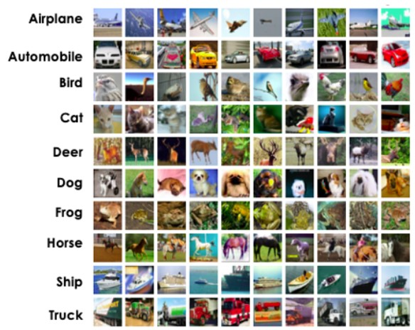

Unit 9 learnings
Convolutional neural networks
In unit 9, convultional neural networks for image recognition has been introduced. We have also begun our group assessment 2 using the CIFAR10 datset for image class prediction. In our
assignment, the following areas have been empirically processed by the team members.
CIFAR10 dataset
The CIFAR10 10 dataset consists of 50000 training images which are labelled by class (Airplane, Automobile, Bird, Cat, Deer, Dog, Frog, Horse, Ship, Truck).

CIFAR10 example pictures, (Walczak &Cerpa, 2003)
Each image in the dataset is 32*32 in RGB format. There is also a test set included of size 10000 images.
Training/Validation datset
Data for convolutional neural networks is typically split into three sets, training, validation and test (Yamashita. et al, 2018). The training set is used by the neural network algorithm to calculate the loss values via forward propagation, with learning weights being updated via back propagation. The Validation set is used to evaluate the model during training to fine tune hyper-parameters, and provide an unbiased evaluation of model fit on the training dataset (Brownlee, 2017). The above imade shows how we have split our data. The split is 40000 records in the training dataset, and 10000 into the validation set. In hindsight, we had omitted to randomise the data prior to the split which would have been a good approach to ensuring the class balance in training and validation sets are randomly distributed.
Convolutional neural network architecture
Architecture of a CNN, (Mishra, 2020)
The above image shows the general layers included in a CNN. Many different architectures can be created, such as the simplistic model used in the example literature:
To the VGG16 model which won the Imagenet competition in 2014:
Summary of the VGG16 model, (Thakur, 2019)
The below model is the one used for our second assessment, and is a large model comparatively. It has performed well in our testing using many models. This model contains 4,561,086 trainable
parameters. We have not tested data augmentation techniques. The best result was produced by using dropout at stages of our network. Possibly, a future improvement will be to add a degree
of data augmentation as well, and re-assess the results.
The below image shows the loss curve:
From the loss curve, it is seen that both training and validation loss decrease but there is still a large gap between both. This model has likely overfit the training data at approximately over
10 epochs. This is likely due to the size of our training dataset vs the size of the validation dataset, that is the training data has too few examples compared to the validation set, and does
not provide sufficient information to the model to learn. As mention above, data augmentation may also assit with this, along with ramdom sampling of both training and validation sets.
The below graph shows the accuracy curves for the network:
From this we can also see overfitting occuring at approximately above 10 epochs. We would have desired a training curve which more closely follows the validation curve. Further testing with the above concepts
would be necessary for this network, but for the time we had at hand to experiment, we are happy with the model itself, and believe minor additons would give huge benefit.
We have used the Adam optimiser, which is a gradient descent optimisation algorithm. Adam realises the benefits of both the adaptive gradienbt algorithm, and root mean square propagation in that
it considers the average of the second moments of gradient (uncentred variance)(Brownlee, 2017).